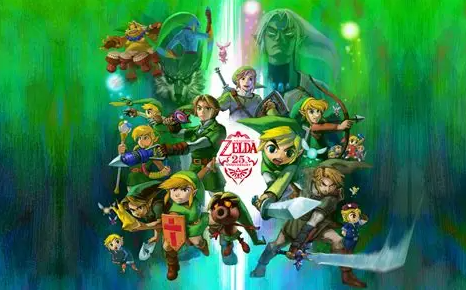

Make a page dedicated to something you are interested in. It could be a band/singer/music group, or a video game, or a toy/board game, or an actor/actress, or a TV show/movie, or anything else you can think of. Use your page to describe why you like, and what you like about it, and why you think other people should be interested in it. You can include links to other fanpages or the official page if you'd like.
|
One thing I'm interested in is a video game called The Legend of Zelda. Zelda definition |
 |
The reason why I like Zelda games is because I think they're different from most games. I've tried looking for other games as good at Zelda but I can't find one that is as fun and challenging as Zelda. Many of the games include puzzles, fun side quests, and a great story. The puzzles in The Legend of Zelda games actually require some thought and time to solve, which I think is fun.
I think that other people should be interested in these games because there are so many to choose from. Each game has something different to offer so you'll eventually find the game for you. If you want more puzzles then I suggest one of the older games like Orcarena of Time. The puzzles in Orcarena of time are very challenging. If you want something where you can be free and can cause chaos then I suggest Tears of the Kingdom. If your looking for a bright and lively Zelda game then I would recomend Wind Waker or The Minish Cap. These two games have fun art styles that are different from most Zelda games.